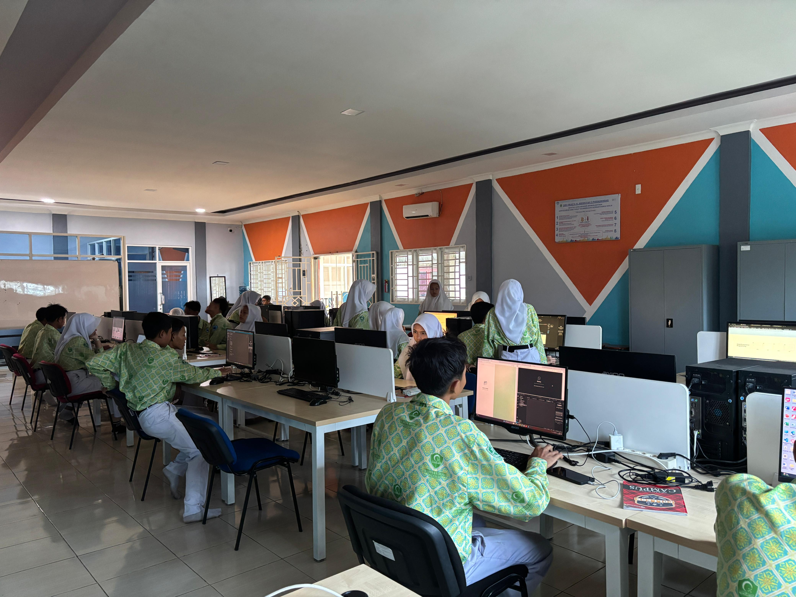

Coding
Coding adalah kegiatan menulis sekumpulan kode untuk berkomunikasi
dengan komputer. Dengan kode itu, kita dapat meminta komputer untuk
menjalankan suatu hal sesuai instruksinya.
Algorithm
Algoritma adalah proses atau serangkaian aturan yang harus diikuti
dalam perhitungan atau operasi pemecahan masalah lainnya, terutama
oleh komputer. Dengan kata lain, semua susunan logis yang diurutkan
berdasarkan sistematika tertentu dan digunakan untuk memecahkan
suatu masalah.
Design
Desain adalah rancangan dari suatu produk atau benda yang akan
dibuat. Desain dapat berupa sketsa gambar atau model.

Kemampuan Lulusan
Merancang dan membuat UI/UX atau prototype aplikasi
Merancangan, membuat dan mengelola system dan database
Merancang, membuat dan mengelola aplikasi berbasis desktop, web
dan mobile
Melakukan testing aplikasi, dll
Competency Based Training
Kegiatan Competency Based Training (CBT) bertujuan untuk
menumbuhkembangkan karakter dan etos kerja (disiplin, tanggung jawab,
jujur, kerjasama, kepemimpinan, dan lain-lain) yang dibutuhkan DU/DI
serta meningkatkan kualitas hasil pembelajaran. Kegiatan CBT Rekayasa
Perangkat Lunak meliputi kegiatan dimulai dari mencari proyek baik
dari internal/eksternal sekolah, mengidentifikasi kebutuhan pemberi
proyek (requirements), melakukan desain proyek (design), melakukan
implementasi (coding), dan melakukan pengujian proyek (testing).